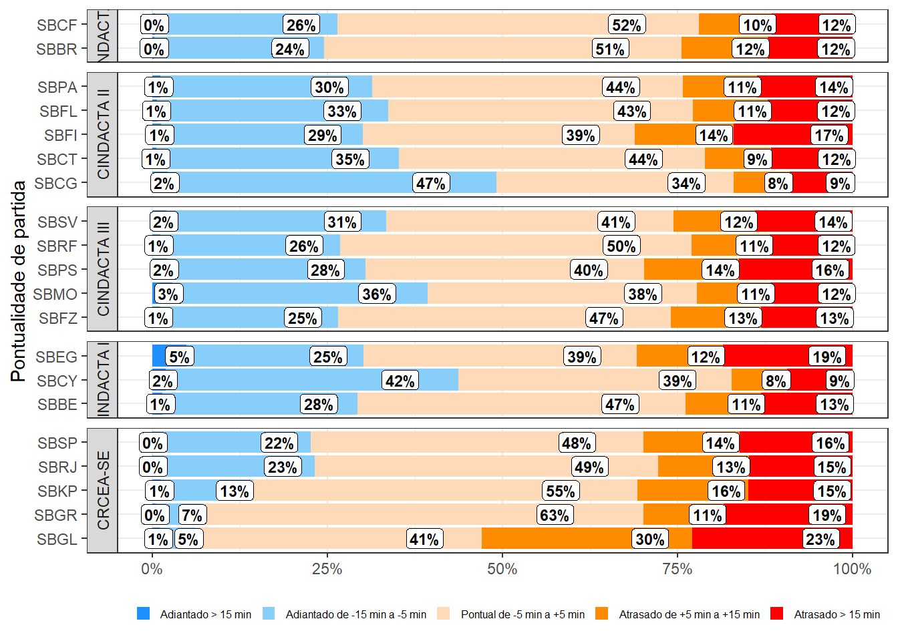

A Minimal Book Example
1
Sumário executivo
2
Introdução
2.1
Gestão por performance
2.1.1
Plano Global de Navegação Aérea - GANP
2.2
Abrangência
2.3
Âmbito geográfico
2.4
Escopo
2.5
Âmbito temporal
2.6
Retomada da demanda nacional pós-COVID-19
2.7
Fontes de dados
3
Características do SISCEAB
3.1
Organização dos Serviços de Navegação Aérea
3.2
Órgãos ATS – ACC / APP / TWR / AFIS
3.3
Centro de Controle de Área – ACC
3.4
Controle de Aproximação - APP
3.5
Torre de Controle de Aeródromo - TWR
3.6
AFIS
3.7
Organizações Regionais do DECEA
3.8
Caracterização da demanda
3.8.1
Demanda nos principais aeroportos do SISCEAB
3.9
Chapters and sub-chapters
3.10
Captioned figures and tables
4
Parts
5
Footnotes and citations
5.1
Footnotes
5.2
Citations
6
Blocks
6.1
Equations
6.2
Theorems and proofs
6.3
Callout blocks
7
Sharing your book
7.1
Publishing
7.2
404 pages
7.3
Metadata for sharing
References
8
2 GRÁFICO MOVIMENTO DA AVIAÇÃO COMERCIAL DOMÉSTICA
9
4 GRÁFICO DE MOVIMENTO DA AVIAÇÃO GERAL
9.1
8.2 DEP e ARR
10
13 Pontualidade DEP em 2022
11
14 MÉDIA MÓVEL
12
15 DEP e ARR REGIONAL
12.1
22.7 TEMPO ADICIONAL EM TMA C100 COM VAR
12.2
23.2 Horas de LOGIN X horas de escala APP
12.3
23.3 Horas de LOGIN X horas de escala TWR
13
MAPAS CHS
13.1
24.1 MAPA SETOR SBBS
13.2
24.3 MAPA SETOR SBRE
13.3
24.4 MAPA SETOR SBAZ
14
MAPAS de FIR
14.1
25.1 MAPA SETOR SBBS
14.2
25.3 MAPA SETOR SBRE
14.3
25.4 MAPA SETOR SBAZ
Published with bookdown
Untitled
10
13 Pontualidade DEP em 2022
